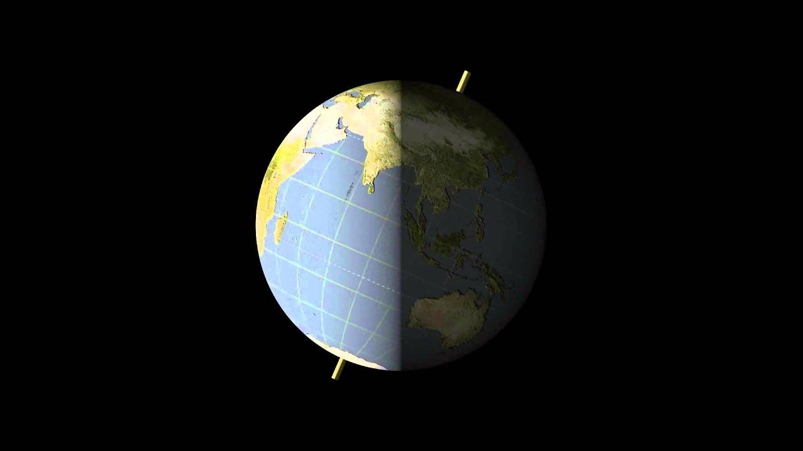

Earth’s Rotation: Causes, Effects, and Recent Research
Causes of Earth’s rotation
The following factors have been identified as the primary causes of changes in Earth’s rotation:
- Glacial melting: The Earth’s mass distribution changes as polar ice caps and mountain glaciers melt. As the massive ice layers thin, the crust and mantle are uplifted, which causes the axis of rotation to shift.
- Groundwater use: A team led by Professor Ki-Won Seo of Seoul National University’s Department of Earth Sciences and Education found that humanity’s excessive use of groundwater has a significant impact on the rotation of the Earth’s axis. From 1993 to 2010, humans used about 2.15 trillion tons of groundwater, making it the second largest contributor to rotational axis shifts.
- Changes in the Earth’s interior liquids: Dr. Clark Wilson, a geophysicist at the University of Texas, noted that changes in the Earth’s interior liquids can also affect rotational axis shifts.
Effects of rotational axis shifts
Changes in the axis of rotation have the following effects:
- Global Positioning System (GPS) impacts: Axis of rotation changes directly affect GPS, satellite orbital operations, and wireless communications. It can cause errors in aircraft, missiles, map apps, and more.
- Changes in regional sun exposure: While not enough to change the seasons, changes in Earth’s axis of rotation can change the amount of sun exposure each region receives, which can affect climate patterns like rainfall.
- Shifting position of the North Pole: The shifting position of the North Pole, in particular, causes magnetic field maps to be rewritten, which affects GPS and satellite operations.
Recent research findings
A research team led by Professor Ki-Won Seo of Seoul National University found that groundwater depletion and sea level rise are responsible for the shift in the direction of the rotation axis since the 2000s. The study was published in the Geophysical Research Letter.
A study by the Chinese Academy of Sciences found that climate change-induced glacier decline is affecting the Earth’s rotation, and that the axis of rotation shifted in the 1990s and 2000s.
Recent studies have shown that global warming is slowing the Earth’s rotation and shifting its axis of rotation as well, with the addition of decreasing polar ice, in particular, as affecting the axis of rotation.
While shifts in the Earth’s axis of rotation are a natural phenomenon, they are increasingly being influenced by human activity, and it is becoming important to understand and prepare for the impact of these changes on the global environment and infrastructure.
Updates and additional impacts of rotational axis shifts
Specific patterns of rotational axis shift
The Earth’s axis of rotation has been slowly shifting its northern tip from the Arctic toward Canada over the past few decades, before abruptly turning eastward. From 1990 to the present, the axis of rotation has shifted about 15 meters, and in the 2000s, the direction of rotation has changed. The average rate of movement from 1995 to 2020 was observed to be 17 times faster than the rate of movement from 1981 to 1995.
Changes in day length
Changes in the axis of rotation also affect the speed at which the Earth rotates. Recent studies have shown that global warming is melting glaciers in Greenland and Antarctica, changing the shape of the Earth and slowing its rotation. A team of researchers from the Swiss Federal Institute of Technology in Zurich, Switzerland, reported in the Proceedings of the National Academy of Sciences that between 1900 and 2000, the rotation slowed by 0.3 to 1.0 milliseconds per century (ms/cy), but since 2000, it has been speeding up to 1.3 ms/cy.
The biggest influence on the Earth’s rotation is the gravitational pull of the moon, which has slowed the Earth’s rotation by 2.4 milliseconds per 100 years for billions of years. However, if greenhouse gas emissions are not reduced, they are projected to slow the Earth’s rotation by 2.62 milliseconds per 100 years by 2100, which could outweigh the influence of the moon’s gravity.
Magnetic field changes and satellite system risks
The Earth’s magnetic field is constantly changing due to the movement of its inner liquid core, which in turn is changing the speed at which it moves in tandem with its rotational axis. In the last five years, the speed of movement of the North Pole has been reported to have plummeted, an unprecedented phenomenon that has attracted the attention of the scientific community.
Small changes in the magnetic field have the potential to cause errors in satellite orbits and communications, leading to a global call for action, especially for critical data communications and location-based services.
Stratospheric shrinkage
Another impact of global warming is the shrinking of the stratosphere. In 2021, a team of researchers from the University of Ourense Vigo in Spain published a study showing that the stratosphere, which sits between 20 and 60 kilometers above the Earth’s surface, is shrinking as carbon emissions from human activities heat and expand the troposphere, pushing it up and away. This has caused the layer to lose 400 meters of thickness since the 1980s and is expected to be about 1 kilometer thinner by 2080 if carbon emissions are not reduced.
The importance of international cooperation and monitoring
Close cooperation with the international community, as well as research collaboration at the national level, is essential to address the various issues related to the changing axis of rotation. It is important to anticipate problems that may arise in various fields, such as satellites, GPS, and communication systems, and to prepare effective response strategies.
It is also being suggested that new technologies should be used to build a system that can monitor the rotation axis and magnetic field fluctuations in real time and respond quickly.